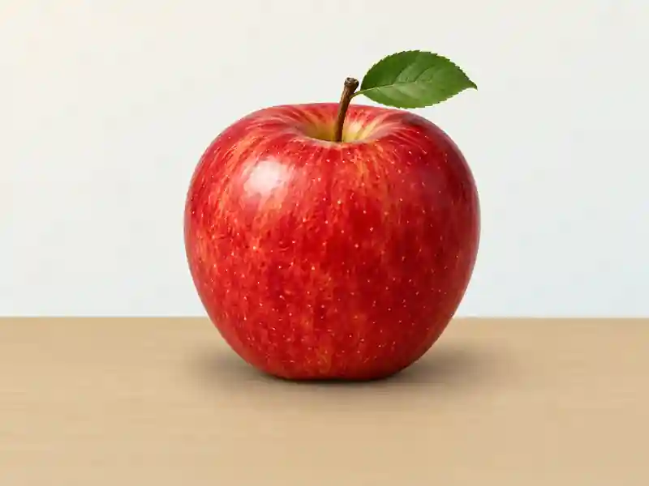
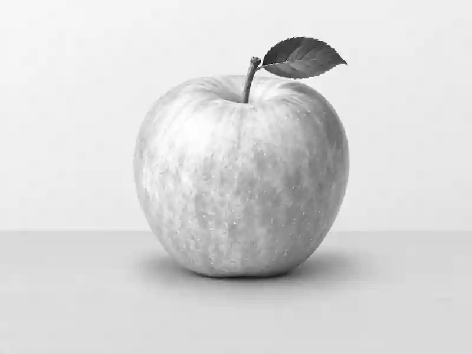
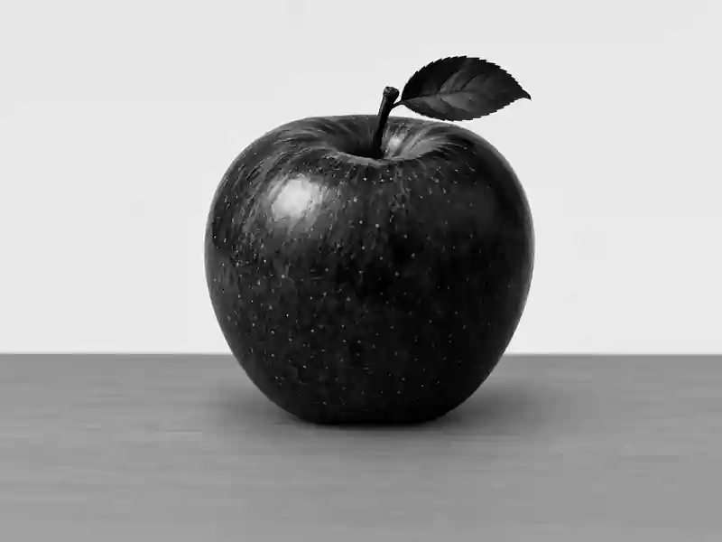

01 · IMAGE & TENSOR
이미지는 어떻게 숫자가 될까?
이미지 파일이 픽셀 배열과 모델 입력 Tensor로 바뀌는 과정을 shape·채널·값 범위 관점에서 이해합니다.
이미지 파일과 픽셀 배열은 같은 것이 아니다
카메라나 저장장치에 있는 JPEG·PNG 파일은 곧바로 [H,W,C] 숫자 배열인 것이 아닙니다. 파일에는 압축된 이미지 데이터와 형식 정보가 들어 있고, decoder가 파일을 해석한 뒤 비로소 각 위치의 픽셀 값을 가진 raster 배열을 얻습니다. 모델은 파일 형식 자체보다 이렇게 디코딩되고 전처리된 숫자 배열을 입력으로 받습니다.
예를 들어 디코딩된 224 × 224 RGB (Red, Green, Blue, 빨강·초록·파랑의 세 색상 채널) 이미지는 공간 위치가 50,176개이고, 각 위치에 R·G·B 세 값이 있으므로 총 150,528개의 채널 값을 가집니다. JPEG 파일의 용량이 작다고 해서 모델 입력의 숫자 개수도 적다는 뜻은 아닙니다. 압축 파일 크기와 디코딩된 배열 크기는 다른 개념입니다.
파일 → decode → 픽셀 배열 → 전처리 → Tensor (여러 축을 가진 숫자 배열) → 모델 순서로 생각하면, 이미지 I/O 문제와 모델 입력 문제를 섞지 않게 됩니다.

한 픽셀에는 무엇이 들어 있을까?
| 표현 | 자료 구조 예시 | 의미 |
|---|---|---|
| 8-bit Grayscale 예시 | [H, W] · 값 0~255 | 한 위치를 밝기 값 하나로 표현합니다. 이 예시에서는 0이 검정, 255가 흰색입니다. |
| RGB | [H, W, 3] · [220, 60, 30] | 같은 공간 위치에 R, G, B 세 채널 값이 있습니다. |
| RGBA | [H, W, 4] | RGB에 투명도 alpha 채널이 추가된 예입니다. 모델이 항상 3채널만 받는 것은 아닙니다. |
RGB 이미지 한 장을 세 장의 2차원 평면으로 생각해도 됩니다. R plane, G plane, B plane은 같은 (y,x) 좌표를 공유하며, 한 픽셀의 색은 그 위치의 세 채널 값을 함께 읽어 결정됩니다.
여기서 0~255는 흔한 8-bit 표현의 예시입니다. 실제 파이프라인에서는 10/12/16-bit 센서 값, float 이미지, 다른 color space도 사용할 수 있습니다. 또한 저장된 RGB 숫자는 조명·노출·white balance·감마 같은 카메라 처리의 영향을 받은 값이지, 물체의 고정된 “진짜 색 숫자”가 아닙니다.



HWC, CHW, NCHW는 무엇이 다른가?
| 표기 | 예시 shape | 어디서 자주 보나 |
|---|---|---|
| HWC (Height, Width, Channel, 높이·너비·채널 순서의 이미지 배열) | [224, 224, 3] | NumPy/OpenCV 계열의 디코딩 배열에서 흔한 축 순서 |
| CHW (Channel, Height, Width, 채널·높이·너비 순서의 이미지 Tensor) | [3, 224, 224] | Torchvision의 image Tensor에서 흔한 축 순서 |
| NCHW (Batch, Channel, Height, Width, 배치·채널·높이·너비 순서의 Tensor) | [32, 3, 224, 224] | PyTorch Conv2d에 batch를 포함해 넣는 대표 형태 |
H, W, C, N은 각각 height, width, channel, batch를 뜻합니다. 같은 이미지라도 [H,W,C]와 [C,H,W]는 숫자의 개수가 같지만 축의 의미와 순서가 다릅니다. 이 순서를 바꿀 때는 reshape가 아니라 transpose 또는 permute처럼 축 자체를 재배치하는 연산을 사용해야 합니다.
OpenCV의 기본 컬러 읽기 결과는 BGR (Blue, Green, Red, OpenCV에서 흔히 사용하는 파랑·초록·빨강 채널 순서) 순서입니다. 따라서 shape가 [H,W,3]으로 맞더라도 RGB 모델에 그대로 넣으면 빨강과 파랑 채널의 의미가 바뀔 수 있습니다. shape, channel order, dtype (data type, 숫자를 저장하는 자료형), value range를 함께 확인해야 합니다.
영상 해상도는 보통 width × height로 말하지만, HWC 배열 shape는 [height, width, channel] 순서이므로 [1080, 1920, 3]이 됩니다.
Resize는 단순히 픽셀 수만 줄이지 않는다
모델 입력 크기를 맞추기 위해 resize를 자주 사용하지만, resize는 원본 픽셀을 그대로 골라 담는 작업이 아니라 새 격자에 값을 resampling하는 과정입니다. 특히 1920 × 1080 같은 16:9 이미지를 224 × 224로 직접 늘이거나 줄이면 종횡비가 바뀌어 원이나 객체 모양이 찌그러질 수 있습니다.
| 방법 | 장점 | 주의점 |
|---|---|---|
| 직접 224×224 resize | 구현이 단순하고 출력 shape가 바로 고정됨 | 원본 종횡비가 다르면 geometry 왜곡 가능 |
| 비율 유지 후 center/random crop | 형태 비율을 유지 | 가장자리 객체나 작은 defect가 crop으로 사라질 수 있음 |
| 비율 유지 후 padding/letterbox | 전체 장면을 유지 | padding 영역이 추가되고 실제 유효 영역 비율이 달라짐 |
또한 강한 downsampling에서는 작은 패턴이 몇 픽셀로 줄거나 interpolation 과정에서 약해질 수 있습니다. 작은 defect가 중요한 산업 영상이라면 “모델이 받는 최종 크기에서 defect가 몇 픽셀로 남는가?”를 반드시 확인해야 합니다. 사전학습 모델을 사용할 때는 임의의 resize 규칙을 만들기보다 해당 weight가 제공하는 공식 transform을 먼저 확인하는 편이 안전합니다.
같은 대상이어도 픽셀 값은 달라진다
컴퓨터는 “같은 물체”라는 의미를 직접 입력받지 않습니다. 조명 세기, 노출, 색온도, white balance, 감마, 센서 노이즈가 바뀌면 같은 구조도 다른 숫자 배열로 기록될 수 있습니다. 아래 실습은 이 현상 중 밝기 gain과 clipping만 단순화해서 보여 주는 합성 예시입니다.
밝기와 픽셀 값
INTERACTIVE표시값 = clip(round(원래 값 × gain), 0, 255). 실제 카메라의 노출·감마·white balance·노이즈를 모두 재현하는 물리 모델은 아닙니다.
예를 들어 원래 값 170에 gain 1.8을 적용하면 306이지만 8-bit 범위에서는 255로 잘립니다. 이처럼 서로 다른 원래 값이 모두 255가 되면 saturation으로 정보가 손실됩니다. 모델의 조명 강건성을 이야기할 때는 단순 augmentation뿐 아니라 실제 촬영 조건과 train/test 입력 분포를 함께 봐야 합니다.
dtype, scaling, normalization을 따로 확인하기
uint8 → float32는 자료형 변환이고, 255로 나누어 0~255를 0~1 범위로 바꾸는 것은 scaling입니다. 그 다음 채널별 평균과 표준편차를 이용해 값을 바꾸는 과정은 Torchvision에서 Normalize라고 부릅니다. 세 단계는 목적이 다르므로 “정규화했다”라는 한 문장으로 뭉뚱그리면 전처리 오류를 찾기 어렵습니다.
가상의 한 채널에서 픽셀 값이 128, mean이 0.5, std가 0.25라면 128/255 ≈ 0.50196이고, 이후 (0.50196 − 0.5)/0.25 ≈ 0.00784가 됩니다. normalization 이후 값은 0~1 범위를 벗어나거나 음수가 될 수 있으며, 이것은 오류가 아닙니다.
실제 RGB에서는 보통 채널마다 mean[c], std[c]를 따로 사용합니다. 특히 사전학습 weight를 사용할 때는 resize/crop, dtype, scaling, normalization까지 포함한 공식 preprocessing transform을 그대로 확인해야 합니다.
입력 크기 · axis order · channel order · dtype · value range · normalization이 모두 맞아야 합니다. 학습과 추론에서 이 계약이 달라지면 shape가 같아도 성능이 크게 흔들릴 수 있습니다.
스스로 설명해 보기
JPEG 파일을 읽기 전부터 [H,W,3] 배열이라고 말해도 될까?
아닙니다. JPEG/PNG는 인코딩된 파일 형식이고, decoder가 해석한 뒤 픽셀 배열을 얻습니다.
224 × 224 RGB 이미지의 값은 왜 50,176개가 아니라 150,528개일까?
224 × 224 = 50,176은 공간 위치의 수입니다. 각 위치에 RGB 세 채널 값이 있으므로 50,176 × 3 = 150,528개입니다.
[H,W,C]를 [C,H,W]로 바꿀 때 reshape를 쓰면 왜 위험할까?
reshape는 저장된 숫자를 새 shape로 다시 해석할 뿐 축의 의미를 올바르게 교환하지 않습니다. transpose/permute처럼 axis를 명시적으로 재배치해야 합니다.
1920 × 1080을 224 × 224로 바로 resize하면 항상 괜찮을까?
아닙니다. 종횡비가 바뀌면 geometry가 왜곡될 수 있고, 강한 downsampling에서는 작은 패턴이 사라질 수 있습니다. 모델의 공식 transform과 task 특성을 기준으로 crop/pad/resize 전략을 선택해야 합니다.
배치 크기를 16에서 32로 바꾸면 모델 파라미터 수도 두 배가 될까?
아닙니다. 파라미터 수는 그대로이고, 한 번에 처리하는 입력과 중간 activation 양이 늘어 일반적으로 메모리 사용량이 증가합니다.
출처와 더 확인할 자료
본문은 이해를 위한 한국어 해설입니다. 도식은 직접 재구성했으며, 가상 수치와 단순화한 구조는 해당 위치에 표시했습니다.
- Torchvision · Getting started with transforms v2 ↗decode된 image Tensor의 shape, dtype scaling, Normalize를 포함한 공식 전처리 예시입니다.
- PyTorch · Conv2d ↗Conv2d가 받는 CHW/NCHW 입력 shape와 channel 의미를 확인할 수 있습니다.
- Torchvision · Models and pre-trained weights ↗사전학습 weight가 제공하는 preprocessing transform을 확인하는 공식 문서입니다.
- OpenCV · Image file reading and writing ↗이미지 파일 decode와 OpenCV 컬러 이미지 읽기의 공식 문서입니다.